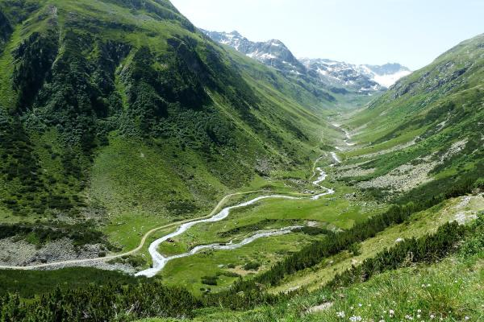
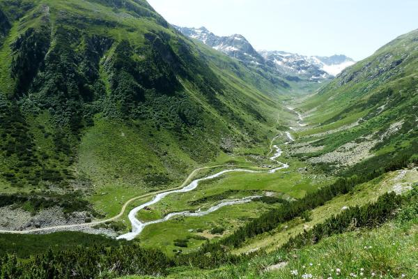
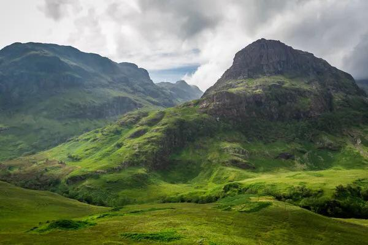
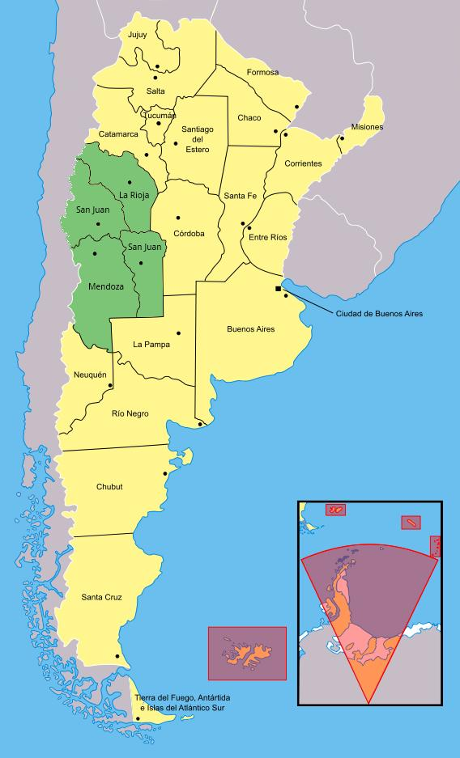

Los Ambientes Cuyanos
Los Ambientes cuyanos comprenden en partes de las provincias de: La Rioja, San Juan y Mendoza. En esta región se indentifican dos ambientes bien diferenciados: Por un lado las montañas en el oeste, con los oasis en los valles, y hacia el este, la planicie que se extiende entre la cordillera de los andes y las sierras pampeanas
 


